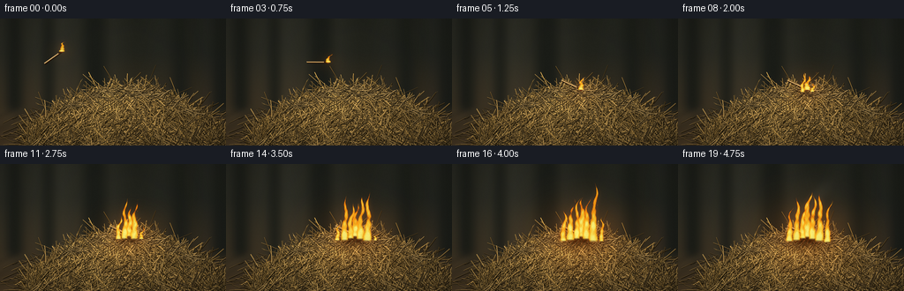
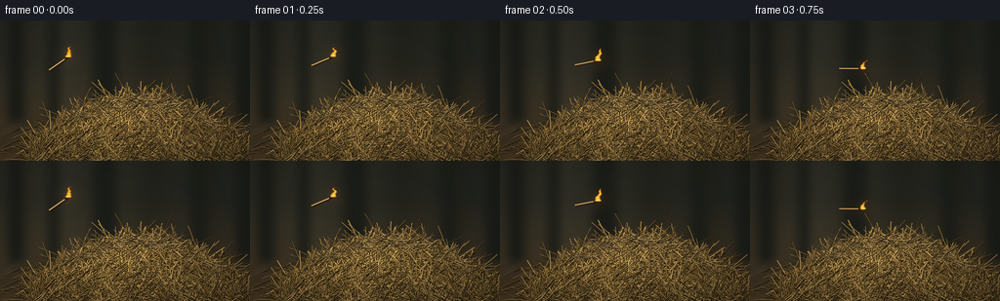

CODING AGENTS AS PIXEL WORLD MODELS
traex/GPT-6.1-Sol · material_0026
点击播放 · 原生 RGB 像素
逐轮保存的候选
回放视频、检查图与代码变化。
每份候选均可单独播放。实际图片检查记录在下方工具轨迹中。
候选 01播放与检查图
点击播放 · 原生 RGB 像素


展开代码变化
--- 上一保存版本
+++ 本次保存版本
@@ -0,0 +1,290 @@
+"""Procedural RGB animation of a lit match landing in dry straw.
+Uses only geometric drawing, analytic shading, and seeded noise.
+"""
+from pathlib import Path
+import json
+import math
+import numpy as np
+from PIL import Image, ImageDraw, ImageFilter
+import artifact_io
+
+ROOT = Path(__file__).resolve().parent
+SPEC = json.loads((ROOT / 'task_spec.json').read_text())
+W, H = SPEC['width'], SPEC['height']
+S = 4
+WW, HH = W*S, H*S
+rng = np.random.default_rng(42106)
+Y, X = np.mgrid[0:HH, 0:WW].astype(np.float32) / S
+
+
+def line(d, points, fill, width=1):
+ d.line([(int(x*S), int(y*S)) for x, y in points], fill=fill, width=max(1, int(width*S)), joint='curve')
+
+
+def ellipse(d, box, fill):
+ d.ellipse(tuple(int(v*S) for v in box), fill=fill)
+
+
+def background():
+ # A dim, out-of-focus barn, with a rough earthen work surface.
+ top = np.array([32., 34., 29.])
+ bottom = np.array([68., 53., 34.])
+ f = np.clip((Y-40)/103, 0, 1)[..., None]
+ a = top * (1-f) + bottom * f
+ lighting = 12*np.exp(-((X-52)/140)**2 - ((Y-49)/85)**2)
+ a += lighting[..., None]*np.array([1., .84, .53])
+ a += (3*np.sin(X/37) + 2*np.cos(X/9.7))[..., None]
+ im = Image.fromarray(np.uint8(np.clip(a, 0, 255)))
+ d = ImageDraw.Draw(im)
+ # Very faint vertical timbers, deliberately softened far behind the subject.
+ for x, width in [(8, 17), (49, 12), (95, 26), (196, 17), (241, 22)]:
+ d.rectangle((x*S, 0, (x+width)*S, 105*S), fill=(27, 29, 24))
+ line(d, [(x+width, 0), (x+width, 105)], (53, 47, 32), 1.2)
+ im = im.filter(ImageFilter.GaussianBlur(5*S))
+ a = np.array(im, dtype=np.float32)
+ noise = rng.normal(0, 1.0, (HH, WW))
+ a += noise[..., None]
+ surface = np.clip((Y-97)/12, 0, 1)
+ grain = rng.normal(0, 2.2, (HH, WW)) + 2.5*np.sin(X*.28+Y*.44)
+ a += (surface*grain)[..., None]*np.array([1., .8, .55])
+ shadow = np.exp(-((X-158)/111)**2 - ((Y-130)/17)**2)*.59
+ a *= (1-shadow)[..., None]
+ return Image.fromarray(np.uint8(np.clip(a, 0, 255)))
+
+
+def straw(d, x, y, length, angle, bend, color, thick, detail=True):
+ cs, sn = math.cos(angle), math.sin(angle)
+ ts = np.linspace(-.5, .5, 9)
+ points = [(x+length*t*cs-bend*(4*t*t-1)*sn,
+ y+length*t*sn+bend*(4*t*t-1)*cs) for t in ts]
+ dark = tuple(int(v*.28) for v in color)
+ line(d, [(px+.2, py+.45) for px, py in points], dark, thick+0.5)
+ line(d, points, color, thick)
+ if thick > .43:
+ highlight = tuple(min(255, int(v*1.13+8)) for v in color)
+ line(d, [(px-.10, py-.13) for px, py in points], highlight, thick*.25)
+ if detail:
+ for t in [-.21, .20]:
+ px = x+length*t*cs-bend*(4*t*t-1)*sn
+ py = y+length*t*sn+bend*(4*t*t-1)*cs
+ line(d, [(px-sn*thick*.7, py+cs*thick*.7),
+ (px+sn*thick*.7, py-cs*thick*.7)], tuple(int(v*.68) for v in color), .22)
+ if rng.random() < .20:
+ px, py = points[-1]
+ line(d, [(px-2*cs, py-2*sn), (px+1.8*cs-.9*sn, py+1.8*sn+.9*cs)], color, .2)
+
+
+def hay_scene():
+ im = background()
+ d = ImageDraw.Draw(im)
+ # Detached strands scattered on the ground beyond the mound.
+ for _ in range(160):
+ x, y = rng.uniform(5, 257), rng.uniform(106, 146)
+ length = rng.uniform(5, 33)
+ color = np.array([142, 112, 61])*rng.uniform(.55, 1.15)
+ straw(d, x, y, length, rng.uniform(-.6, .6), rng.uniform(-1, 1), tuple(color.astype(int)), rng.uniform(.22, .6), False)
+ # Irregular mass: no single clean ellipse outline remains under the loose fibers.
+ contour = [(22, 143), (29, 125), (46, 111), (65, 99), (83, 93), (108, 85),
+ (127, 78), (149, 77), (171, 82), (192, 89), (216, 103), (240, 119), (259, 137), (260, 146)]
+ mask = Image.new('L', (WW, HH))
+ md = ImageDraw.Draw(mask)
+ md.polygon([(int(x*S),int(y*S)) for x,y in contour], fill=255)
+ ma = np.asarray(mask)/255.
+ grain = rng.normal(0, 4, (HH, WW))
+ ridge = np.exp(-((X-125)/100)**2 - ((Y-95)/28)**2)
+ base = np.zeros((HH, WW, 3), np.float32)
+ for c, (b, h) in enumerate([(52,34), (35,24), (17,12)]):
+ base[...,c] = b + h*ridge + grain
+ arr = np.asarray(im, dtype=np.float32)
+ arr = arr*(1-ma[...,None]) + base*ma[...,None]
+ im = Image.fromarray(np.uint8(np.clip(arr,0,255)))
+ d = ImageDraw.Draw(im)
+ # Buried fibers establish crevices and rich woven texture, then surface straw.
+ samples = []
+ for _ in range(3200):
+ x = rng.uniform(31, 256)
+ top = 77 + 0.0043*(x-143)**2
+ y = rng.uniform(top, 149)
+ if y > 145:
+ y -= rng.uniform(0, 3)
+ samples.append((y, x, top))
+ samples.sort()
+ for y, x, top in samples:
+ light = .52 + .37*math.exp(-((x-113)/105)**2-((y-94)/48)**2)
+ light *= rng.uniform(.66, 1.43)
+ color = np.clip(np.array([201, 158, 83])*light + rng.uniform(-10, 10), 0, 255).astype(int)
+ # Mostly broken dry stems, interspersed with thin curly stalks.
+ length = rng.uniform(8, 36)
+ if rng.random() < .15:
+ length = rng.uniform(34, 60)
+ angle = rng.uniform(-math.pi, math.pi)
+ if rng.random() < .27:
+ angle = (x-145)*.007+rng.normal(0, .27)
+ straw(d, x, y, length, angle, rng.uniform(-2.2,2.2), tuple(color), rng.uniform(.30,.87), True)
+ # Bright isolated wisps silhouetted against the barn at the crown.
+ for _ in range(110):
+ x = rng.uniform(60, 225)
+ top = 77+.0043*(x-143)**2
+ y = top+rng.uniform(0,9)
+ color = tuple((np.array([192, 156, 93])*rng.uniform(.64,1.16)).astype(int))
+ straw(d,x,y,rng.uniform(10,29),rng.uniform(-.95,.95),rng.uniform(-1.5,1.5),color,rng.uniform(.25,.58),True)
+ return np.asarray(im,dtype=np.float32)
+
+BASE = hay_scene()
+
+
+def noise_field(x, y, t):
+ # A deterministic, advected multi-frequency field; no per-frame random popping.
+ return (np.sin(x*.31+y*.19+t*4.8)*.39 +
+ np.sin(x*.73-y*.42+t*7.3+1.5*np.sin(y*.17+t))*.24 +
+ np.sin(x*1.43+y*.77-t*12.7)*.13 +
+ np.sin(x*2.79-y*1.67+t*19.3)*.07)
+
+
+def flame_field(cx, by, height, width, t, phase):
+ z = (by-Y)/max(height, .1)
+ valid = (z >= -.075) & (z < 1.12)
+ zp = np.maximum(z,0)
+ center = cx + (np.sin(zp*6.5-t*5+phase)*1.9 +
+ np.sin(zp*12.5+t*3+phase)*1.1)*zp + 2.8*zp*zp
+ taper = width*np.maximum(0.03,1-zp)**.74
+ dx = (X-center)/np.maximum(taper,.18)
+ n = noise_field(X+phase*12,Y,t+phase*.27)
+ field = 1-dx*dx - zp*.39 + n*(.24+.72*zp)
+ field += .13*np.sin(zp*25-t*10+phase)
+ alpha = np.clip(field*2.3,0,1)*valid
+ alpha *= np.clip((1.06-z)*8,0,1)*np.clip((z+.075)*22,0,1)
+ # Thin translucent orange outer folds; yellow/ivory at the dense root.
+ hot = np.clip(field*.7+.35-.48*zp,0,1)
+ r = np.full_like(X,255)
+ g = 83 + hot*164
+ b = 7 + hot**3*115
+ return alpha, np.stack([r,g,b],-1)
+
+
+def smoke(arr, t, age, growth):
+ if age < .45:
+ return arr
+ density = np.zeros_like(X)
+ for j in range(12):
+ life = age - .25 - j*.19
+ if life < 0: continue
+ # Soft smoke rises from the burn point, losing opacity as it expands.
+ yy = 80 - life*18
+ xx = 144 + 5*life + 3*np.sin(life*2.2+j*.77)
+ radius = 3.3 + life*3.5
+ puff = np.exp(-((X-xx)/(radius*1.2))**2 - ((Y-yy)/(radius*.85))**2)
+ density += puff*.045*min(1,life*2)*np.exp(-life*.24)
+ density *= .76+.24*np.sin(X*.19+Y*.16+t*2)
+ density = np.clip(density,0,.25)
+ tint = np.array([129,126,112])
+ return arr*(1-density[...,None])+tint*density[...,None]
+
+
+def draw_match(arr, t):
+ # A short wooden match follows a ballistic arc, then settles into the hay.
+ landing = 1.25
+ q = min(t/landing,1)
+ hx = 70 + 76*q
+ hy = 37 - 13*q + 56*q*q
+ angle = -.62 + 1.05*q
+ if t >= landing:
+ hx, hy = 146,80
+ angle = .43
+ length = 24
+ tail = (hx-length*math.cos(angle), hy-length*math.sin(angle))
+ im = Image.fromarray(np.uint8(np.clip(arr,0,255)))
+ d = ImageDraw.Draw(im)
+ line(d, [(tail[0]+.4,tail[1]+.6),(hx+.4,hy+.6)],(31,18,8),2.1)
+ line(d,[tail,(hx,hy)],(179,135,75),1.65)
+ line(d,[(tail[0]-.2,tail[1]-.3),(hx-3*math.cos(angle),hy-3*math.sin(angle))],(242,209,149),.62)
+ # Blackened head and neck, edged by a glowing coal.
+ neck = (hx-4.5*math.cos(angle),hy-4.5*math.sin(angle))
+ line(d,[neck,(hx,hy)],(54,30,15),1.6)
+ ellipse(d,(hx-1.65,hy-1.6,hx+1.6,hy+1.5),(116,40,11))
+ ellipse(d,(hx-.85,hy-1.3,hx+.85,hy+.1),(250,123,32))
+ return np.asarray(im,dtype=np.float32),hx,hy
+
+
+def frame(t):
+ landing = 1.25
+ age = max(0,t-landing)
+ growth = np.clip((age-.15)/2.8,0,1)
+ arr = BASE.copy()
+ if age > 0:
+ # The local straw chars; individual raised fibers remain discernible.
+ char = np.exp(-((X-146)/(5+20*growth))**2-((Y-85)/(3+8*growth))**2)
+ arr *= (1-char[...,None]*(.15+.65*growth))
+ coal = char*np.maximum(0,np.sin(X*1.4+Y*.88+t*3)-.76)*growth
+ arr += coal[...,None]*np.array([165,29,2])
+ # Warm light is strongest close to the match or the fire's new roots.
+ if t < landing:
+ q=t/landing; fx=70+76*q; fy=37-13*q+56*q*q
+ amount=.14
+ radius=15
+ else:
+ fx,fy=146,82
+ amount=.24+.52*growth
+ radius=19+growth*32
+ glow = np.exp(-((X-fx)/radius)**2-((Y-fy)/(radius*.75))**2)
+ flicker = .92+.08*math.sin(t*21)
+ arr += glow[...,None]*np.array([73,34,6])*amount*flicker
+ arr = smoke(arr,t,age,growth)
+ arr,hx,hy = draw_match(arr,t)
+ jets = []
+ if t < landing:
+ # Head flame remains attached to the match throughout its throw.
+ jets.append((hx,hy,10.5+1.8*math.sin(t*16),3.4,t,0))
+ else:
+ jets.append((hx,hy,11+growth*34+3*math.sin(t*12),3.4+growth*3.3,t,0))
+ # Progressively ignite adjacent straw, starting at the landing point.
+ for j,(offset,delay,h,w) in enumerate([(-5,.40,32,4.0),(6,.67,43,4.8),(-12,1.06,35,4.5),(14,1.39,49,5.1),(-20,1.88,31,4.0),(23,2.24,32,3.9)]):
+ progress=np.clip((age-delay)/.9,0,1)
+ if progress>0:
+ xx=146+offset
+ yy=81 + abs(offset)*.22
+ ht=(6+h*progress)*(1+.12*math.sin(t*10+j*2.1))
+ jets.append((xx,yy,ht,w*(.43+.57*progress),t,j+1))
+ # A blurred radiance around the luminous volume, followed by its sharp folds.
+ layers=[]
+ total=np.zeros_like(X)
+ for jet in jets:
+ alpha,color=flame_field(*jet)
+ layers.append((alpha,color))
+ total=np.maximum(total,alpha)
+ light=Image.fromarray(np.uint8(total*255)).filter(ImageFilter.GaussianBlur(2.8*S))
+ hal=np.asarray(light,dtype=np.float32)/255
+ arr += hal[...,None]*np.array([42,16,2])
+ for alpha,color in layers:
+ a=alpha*.92
+ arr=arr*(1-a[...,None])+color*a[...,None]
+ # Small thin bright root folds reveal different tongues rather than one block.
+ if age>.5:
+ ember_im=Image.fromarray(np.uint8(np.clip(arr,0,255)))
+ d=ImageDraw.Draw(ember_im)
+ for j in range(9):
+ p=(age-.3+j*.31)%1.7
+ if p<.12: continue
+ ex=140+j*2.3+math.sin(p*4+j)*2+p*3
+ ey=81-p*(14+j*1.1)
+ intensity=(1-p/1.8)*growth
+ if intensity>.09:
+ col=(int(190+65*intensity),int(70+145*intensity),int(8+55*intensity))
+ line(d,[(ex,ey),(ex-.35,ey+1.0)],col,.36)
+ arr=np.asarray(ember_im,dtype=np.float32)
+ # Subtle lens vignette and fine consistent grain make the space less synthetic.
+ vignette=1-.18*((X-139)/173)**2-.11*((Y-79)/126)**2
+ arr *= np.clip(vignette,.67,1)[...,None]
+ im=Image.fromarray(np.uint8(np.clip(arr,0,255)))
+ im=im.resize((W,H),Image.Resampling.LANCZOS)
+ return np.asarray(im,dtype=np.uint8)
+
+
+def main():
+ frames=np.stack([frame(i/SPEC['fps']) for i in range(SPEC['frames'])])
+ artifact_io.save(frames,ROOT)
+ print(f'Saved {len(frames)} RGB frames, {W}x{H}, {SPEC["fps"]} fps.')
+
+
+if __name__ == '__main__':
+ main()
可观测工具轨迹
实际执行的命令与返回图片。
命令 1exit 0
/bin/bash -lc "ls -la && cat prompt.txt && printf '\\n--- RULES ---\\n' && cat GENERATION_RULES.md && printf '\\n--- SPEC ---\\n' && cat task_spec.json"
命令 2exit 0
/bin/bash -lc "cat artifact_io.py && printf '\\n---\\n' && cat player_template.html && python - <<'PY'
import numpy, PIL
print('numpy',numpy.__version__,'PIL',PIL.__version__)
PY"命令 3exit 0
/bin/bash -lc "cat > generate.py <<'PY'
\"\"\"Procedural RGB animation of a lit match landing in dry straw.
Uses only geometric drawing, analytic shading, and seeded noise.
\"\"\"
from pathlib import Path
import json
import math
import numpy as np
from PIL import Image, ImageDraw, ImageFilter
import artifact_io
ROOT = Path(__file__).resolve().parent
SPEC = json.loads((ROOT / 'task_spec.json').read_text())
W, H = SPEC['width'], SPEC['height']
S = 4
WW, HH = W*S, H*S
rng = np.random.default_rng(42106)
Y, X = np.mgrid[0:HH, 0:WW].astype(np.float32) / S
def line(d, points, fill, width=1):
d.line([(int(x*S), int(y*S)) for x, y in points], fill=fill, width=max(1, int(width*S)), joint='curve')
def ellipse(d, box, fill):
d.ellipse(tuple(int(v*S) for v in box), fill=fill)
def background():
# A dim, out-of-focus barn, with a rough earthen work surface.
top = np.array([32., 34., 29.])
bottom = np.array([68., 53., 34.])
f = np.clip((Y-40)/103, 0, 1)[..., None]
a = top * (1-f) + bottom * f
lighting = 12*np.exp(-((X-52)/140)**2 - ((Y-49)/85)**2)
a += lighting[..., None]*np.array([1., .84, .53])
a += (3*np.sin(X/37) + 2*np.cos(X/9.7))[..., None]
im = Image.fromarray(np.uint8(np.clip(a, 0, 255)))
d = ImageDraw.Draw(im)
# Very faint vertical timbers, deliberately softened far behind the subject.
for x, width in [(8, 17), (49, 12), (95, 26), (196, 17), (241, 22)]:
d.rectangle((x*S, 0, (x+width)*S, 105*S), fill=(27, 29, 24))
line(d, [(x+width, 0), (x+width, 105)], (53, 47, 32), 1.2)
im = im.filter(ImageFilter.GaussianBlur(5*S))
a = np.array(im, dtype=np.float32)
noise = rng.normal(0, 1.0, (HH, WW))
a += noise[..., None]
surface = np.clip((Y-97)/12, 0, 1)
grain = rng.normal(0, 2.2, (HH, WW)) + 2.5*np.sin(X*.28+Y*.44)
a += (surface*grain)[..., None]*np.array([1., .8, .55])
shadow = np.exp(-((X-158)/111)**2 - ((Y-130)/17)**2)*.59
a *= (1-shadow)[..., None]
return Image.fromarray(np.uint8(np.clip(a, 0, 255)))
def straw(d, x, y, length, angle, bend, color, thick, detail=True):
cs, sn = math.cos(angle), math.sin(angle)
ts = np.linspace(-.5, .5, 9)
points = [(x+length*t*cs-bend*(4*t*t-1)*sn,
y+length*t*sn+bend*(4*t*t-1)*cs) for t in ts]
dark = tuple(int(v*.28) for v in color)
line(d, [(px+.2, py+.45) for px, py in points], dark, thick+0.5)
line(d, points, color, thick)
if thick > .43:
highlight = tuple(min(255, int(v*1.13+8)) for v in color)
line(d, [(px-.10, py-.13) for px, py in points], highlight, thick*.25)
if detail:
for t in [-.21, .20]:
px = x+length*t*cs-bend*(4*t*t-1)*sn
py = y+length*t*sn+bend*(4*t*t-1)*cs
line(d, [(px-sn*thick*.7, py+cs*thick*.7),
(px+sn*thick*.7, py-cs*thick*.7)], tuple(int(v*.68) for v in color), .22)
if rng.random() < .20:
px, py = points[-1]
line(d, [(px-2*cs, py-2*sn), (px+1.8*cs-.9*sn, py+1.8*sn+.9*cs)], color, .2)
def hay_scene():
im = background()
d = ImageDraw.Draw(im)
# Detached strands scattered on the ground beyond the mound.
for _ in range(160):
x, y = rng.uniform(5, 257), rng.uniform(106, 146)
length = rng.uniform(5, 33)
color = np.array([142, 112, 61])*rng.uniform(.55, 1.15)
straw(d, x, y, length, rng.uniform(-.6, .6), rng.uniform(-1, 1), tuple(color.astype(int)), rng.uniform(.22, .6), False)
# Irregular mass: no single clean ellipse outline remains under the loose fibers.
contour = [(22, 143), (29, 125), (46, 111), (65, 99), (83, 93), (108, 85),
(127, 78), (149, 77), (171, 82), (192, 89), (216, 103), (240, 119), (259, 137), (260, 146)]
mask = Image.new('L', (WW, HH))
md = ImageDraw.Draw(mask)
md.polygon([(int(x*S),int(y*S)) for x,y in contour], fill=255)
ma = np.asarray(mask)/255.
grain = rng.normal(0, 4, (HH, WW))
ridge = np.exp(-((X-125)/100)**2 - ((Y-95)/28)**2)
base = np.zeros((HH, WW, 3), np.float32)
for c, (b, h) in enumerate([(52,34), (35,24), (17,12)]):
base[...,c] = b + h*ridge + grain
arr = np.asarray(im, dtype=np.float32)
arr = arr*(1-ma[...,None]) + base*ma[...,None]
im = Image.fromarray(np.uint8(np.clip(arr,0,255)))
d = ImageDraw.Draw(im)
# Buried fibers establish crevices and rich woven texture, then surface straw.
samples = []
for _ in range(3200):
x = rng.uniform(31, 256)
top = 77 + 0.0043*(x-143)**2
y = rng.uniform(top, 149)
if y > 145:
y -= rng.uniform(0, 3)
samples.append((y, x, top))
samples.sort()
for y, x, top in samples:
light = .52 + .37*math.exp(-((x-113)/105)**2-((y-94)/48)**2)
light *= rng.uniform(.66, 1.43)
color = np.clip(np.array([201, 158, 83])*light + rng.uniform(-10, 10), 0, 255).astype(int)
# Mostly broken dry stems, interspersed with thin curly stalks.
length = rng.uniform(8, 36)
if rng.random() < .15:
length = rng.uniform(34, 60)
angle = rng.uniform(-math.pi, math.pi)
if rng.random() < .27:
angle = (x-145)*.007+rng.normal(0, .27)
straw(d, x, y, length, angle, rng.uniform(-2.2,2.2), tuple(color), rng.uniform(.30,.87), True)
# Bright isolated wisps silhouetted against the barn at the crown.
for _ in range(110):
x = rng.uniform(60, 225)
top = 77+.0043*(x-143)**2
y = top+rng.uniform(0,9)
color = tuple((np.array([192, 156, 93])*rng.uniform(.64,1.16)).astype(int))
straw(d,x,y,rng.uniform(10,29),rng.uniform(-.95,.95),rng.uniform(-1.5,1.5),color,rng.uniform(.25,.58),True)
return np.asarray(im,dtype=np.float32)
BASE = hay_scene()
def noise_field(x, y, t):
# A deterministic, advected multi-frequency field; no per-frame random popping.
return (np.sin(x*.31+y*.19+t*4.8)*.39 +
np.sin(x*.73-y*.42+t*7.3+1.5*np.sin(y*.17+t))*.24 +
np.sin(x*1.43+y*.77-t*12.7)*.13 +
np.sin(x*2.79-y*1.67+t*19.3)*.07)
def flame_field(cx, by, height, width, t, phase):
z = (by-Y)/max(height, .1)
valid = (z >= -.075) & (z < 1.12)
zp = np.maximum(z,0)
center = cx + (np.sin(zp*6.5-t*5+phase)*1.9 +
np.sin(zp*12.5+t*3+phase)*1.1)*zp + 2.8*zp*zp
taper = width*np.maximum(0.03,1-zp)**.74
dx = (X-center)/np.maximum(taper,.18)
n = noise_field(X+phase*12,Y,t+phase*.27)
field = 1-dx*dx - zp*.39 + n*(.24+.72*zp)
field += .13*np.sin(zp*25-t*10+phase)
alpha = np.clip(field*2.3,0,1)*valid
alpha *= np.clip((1.06-z)*8,0,1)*np.clip((z+.075)*22,0,1)
# Thin translucent orange outer folds; yellow/ivory at the dense root.
hot = np.clip(field*.7+.35-.48*zp,0,1)
r = np.full_like(X,255)
g = 83 + hot*164
b = 7 + hot**3*115
return alpha, np.stack([r,g,b],-1)
def smoke(arr, t, age, growth):
if age < .45:
return arr
density = np.zeros_like(X)
for j in range(12):
life = age - .25 - j*.19
if life < 0: continue
# Soft smoke rises from the burn point, losing opacity as it expands.
yy = 80 - life*18
xx = 144 + 5*life + 3*np.sin(life*2.2+j*.77)
radius = 3.3 + life*3.5
puff = np.exp(-((X-xx)/(radius*1.2))**2 - ((Y-yy)/(radius*.85))**2)
density += puff*.045*min(1,life*2)*np.exp(-life*.24)
density *= .76+.24*np.sin(X*.19+Y*.16+t*2)
density = np.clip(density,0,.25)
tint = np.array([129,126,112])
return arr*(1-density[...,None])+tint*density[...,None]
def draw_match(arr, t):
# A short wooden match follows a ballistic arc, then settles into the hay.
landing = 1.25
q = min(t/landing,1)
hx = 70 + 76*q
hy = 37 - 13*q + 56*q*q
angle = -.62 + 1.05*q
if t >= landing:
hx, hy = 146,80
angle = .43
length = 24
tail = (hx-length*math.cos(angle), hy-length*math.sin(angle))
im = Image.fromarray(np.uint8(np.clip(arr,0,255)))
d = ImageDraw.Draw(im)
line(d, [(tail[0]+.4,tail[1]+.6),(hx+.4,hy+.6)],(31,18,8),2.1)
line(d,[tail,(hx,hy)],(179,135,75),1.65)
line(d,[(tail[0]-.2,tail[1]-.3),(hx-3*math.cos(angle),hy-3*math.sin(angle))],(242,209,149),.62)
# Blackened head and neck, edged by a glowing coal.
neck = (hx-4.5*math.cos(angle),hy-4.5*math.sin(angle))
line(d,[neck,(hx,hy)],(54,30,15),1.6)
ellipse(d,(hx-1.65,hy-1.6,hx+1.6,hy+1.5),(116,40,11))
ellipse(d,(hx-.85,hy-1.3,hx+.85,hy+.1),(250,123,32))
return np.asarray(im,dtype=np.float32),hx,hy
def frame(t):
landing = 1.25
age = max(0,t-landing)
growth = np.clip((age-.15)/2.8,0,1)
arr = BASE.copy()
if age > 0:
# The local straw chars; individual raised fibers remain discernible.
char = np.exp(-((X-146)/(5+20*growth))**2-((Y-85)/(3+8*growth))**2)
arr *= (1-char[...,None]*(.15+.65*growth))
coal = char*np.maximum(0,np.sin(X*1.4+Y*.88+t*3)-.76)*growth
arr += coal[...,None]*np.array([165,29,2])
# Warm light is strongest close to the match or the fire's new roots.
if t < landing:
q=t/landing; fx=70+76*q; fy=37-13*q+56*q*q
amount=.14
radius=15
else:
fx,fy=146,82
amount=.24+.52*growth
radius=19+growth*32
glow = np.exp(-((X-fx)/radius)**2-((Y-fy)/(radius*.75))**2)
flicker = .92+.08*math.sin(t*21)
arr += glow[...,None]*np.array([73,34,6])*amount*flicker
arr = smoke(arr,t,age,growth)
arr,hx,hy = draw_match(arr,t)
jets = []
if t < landing:
# Head flame remains attached to the match throughout its throw.
jets.append((hx,hy,10.5+1.8*math.sin(t*16),3.4,t,0))
else:
jets.append((hx,hy,11+growth*34+3*math.sin(t*12),3.4+growth*3.3,t,0))
# Progressively ignite adjacent straw, starting at the landing point.
for j,(offset,delay,h,w) in enumerate([(-5,.40,32,4.0),(6,.67,43,4.8),(-12,1.06,35,4.5),(14,1.39,49,5.1),(-20,1.88,31,4.0),(23,2.24,32,3.9)]):
progress=np.clip((age-delay)/.9,0,1)
if progress>0:
xx=146+offset
yy=81 + abs(offset)*.22
ht=(6+h*progress)*(1+.12*math.sin(t*10+j*2.1))
jets.append((xx,yy,ht,w*(.43+.57*progress),t,j+1))
# A blurred radiance around the luminous volume, followed by its sharp folds.
layers=[]
total=np.zeros_like(X)
for jet in jets:
alpha,color=flame_field(*jet)
layers.append((alpha,color))
total=np.maximum(total,alpha)
light=Image.fromarray(np.uint8(total*255)).filter(ImageFilter.GaussianBlur(2.8*S))
hal=np.asarray(light,dtype=np.float32)/255
arr += hal[...,None]*np.array([42,16,2])
for alpha,color in layers:
a=alpha*.92
arr=arr*(1-a[...,None])+color*a[...,None]
# Small thin bright root folds reveal different tongues rather than one block.
if age>.5:
ember_im=Image.fromarray(np.uint8(np.clip(arr,0,255)))
d=ImageDraw.Draw(ember_im)
for j in range(9):
p=(age-.3+j*.31)%1.7
if p<.12: continue
ex=140+j*2.3+math.sin(p*4+j)*2+p*3
ey=81-p*(14+j*1.1)
intensity=(1-p/1.8)*growth
if intensity>.09:
col=(int(190+65*intensity),int(70+145*intensity),int(8+55*intensity))
line(d,[(ex,ey),(ex-.35,ey+1.0)],col,.36)
arr=np.asarray(ember_im,dtype=np.float32)
# Subtle lens vignette and fine consistent grain make the space less synthetic.
vignette=1-.18*((X-139)/173)**2-.11*((Y-79)/126)**2
arr *= np.clip(vignette,.67,1)[...,None]
im=Image.fromarray(np.uint8(np.clip(arr,0,255)))
im=im.resize((W,H),Image.Resampling.LANCZOS)
return np.asarray(im,dtype=np.uint8)
def main():
frames=np.stack([frame(i/SPEC['fps']) for i in range(SPEC['frames'])])
artifact_io.save(frames,ROOT)
print(f'Saved {len(frames)} RGB frames, {W}x{H}, {SPEC[\"fps\"]} fps.')
if __name__ == '__main__':
main()
PY
python generate.py"命令 4exit 0
/bin/bash -lc "python - <<'PY'
from pathlib import Path
import numpy as np
from PIL import Image
p=Path('.')
a=np.load(p/'pixels.npz')['pixels']
print('Packed RGB tensor:',a.shape,a.dtype)
imgs=[np.asarray(Image.open(p/'frames'/f'{i:02d}.png')) for i in range(20)]
print('Frame shape:',imgs[0].shape,'Frame count:',len(imgs))
print('Mean consecutive pixel difference:',np.mean([np.abs(imgs[i].astype(float)-imgs[i-1]).mean() for i in range(1,20)]))
for name in ['generate.py','pixels.npz','index.html','inspection.png','transition_check.png']:
print(name,(p/name).stat().st_size,'bytes')
PY
command -v ffmpeg || true"保存候选 1 份；完成命令 4 次；可验证图片返回 0 张。原始 API 响应与完整日志保留在本地。